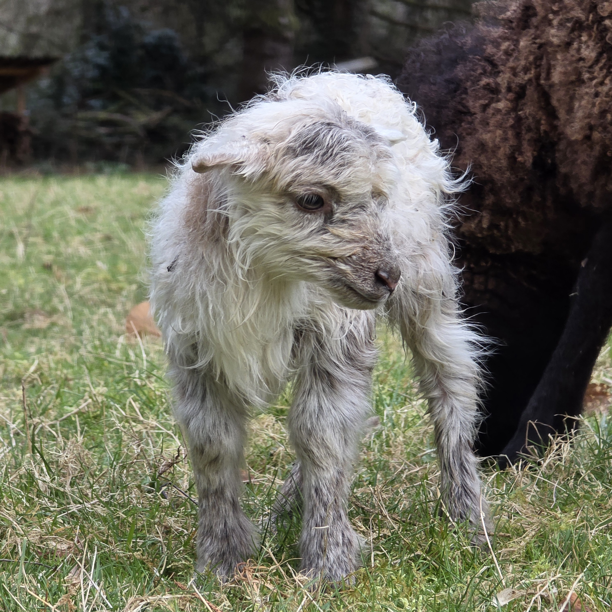
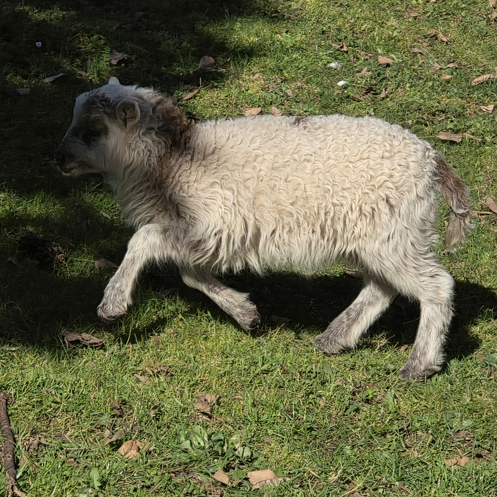

Informations générales
Race : Mouton d’Ouessant
Sexe : Mâle (bélier)
Né le : 21/02/2026
Parents : Mouton (père) et Éclipse (mère)
Famille : Demi-frère de Pralinée
Un petit dernier plein de vie
Chamallow est le petit dernier de la famille formée par Mouton et Éclipse. Il est donc le demi-frère de Pralinée, avec qui il partage ses origines.
Caractère
Chamallow est un jeune bélier plein d’énergie, curieux et déjà très débrouillard. Il n’est jamais très loin quand il s’agit de faire une bêtise… surtout quand il est accompagné !
Complicité avec Nutz 😏
Chamallow est inséparable de Nutz. Entre eux, c’est une vraie histoire : il est clairement sous son charme et tente par tous les moyens de l’impressionner. Et quand il s’agit de faire des bêtises… ils sont toujours partants tous les deux !
Les rois de l’évasion 🌸
Grâce à leur petite taille, Chamallow et Nutz ont trouvé une technique bien à eux : passer sous les fils du parc pour aller goûter aux fleurs… bien plus appétissantes que l’herbe ! Un talent qui amuse… mais qui fait parfois désespérer le propriétaire des lieux 😄
La petite anecdote 🎬
À sa naissance, Chamallow avait une petite tête qui faisait penser à une vraie star de cinéma… un Gremlin ! Espérons simplement qu’il ne se transformera pas s’il se retrouve mouillé 😄



